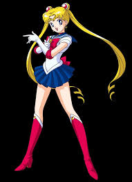
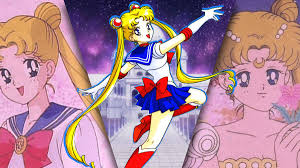

Pretty Soldier Sailor Moon
美少女戦士セーラームーン

Moon Prism Power, Make Up!
Es la protagonista y la campeona de la justicia. Al principio es una adolescente común, miedosa y distraída, pero con un corazón de oro. Gracias a la gata Luna, descubre su destino como la reencarnación de la Princesa Serenity.
Horario: Sus batallas suelen ocurrir bajo la luz de la luna llena.
Ubicacion:



El equipo de guerreras encargado de proteger el Reino de la Luna y la Tierra. Cada una representa a un planeta del sistema solar y posee habilidades elementales únicas. Desde la inteligencia de Mercury hasta el poder del trueno de Jupiter, juntas son invencibles.
Horario: Disponibles 24/7 para salvar el mundo.
Ubicacion:


Moon Prism Power, Make Up!